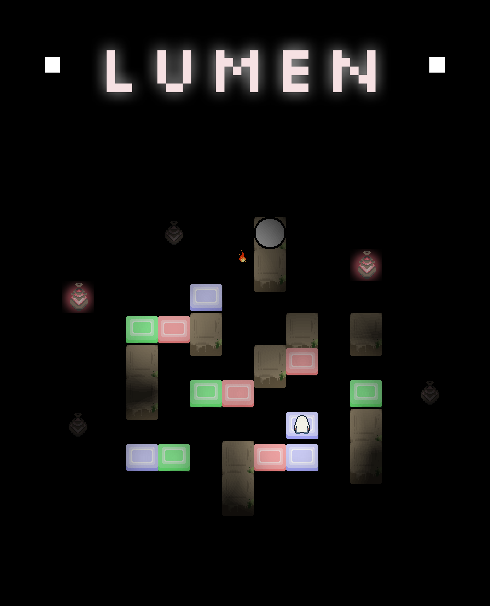
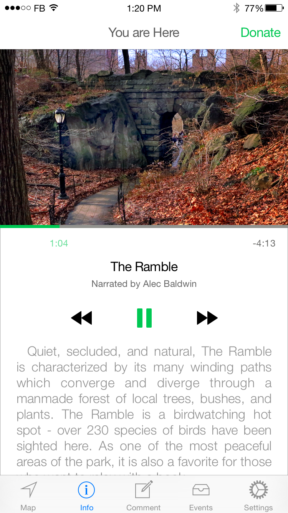
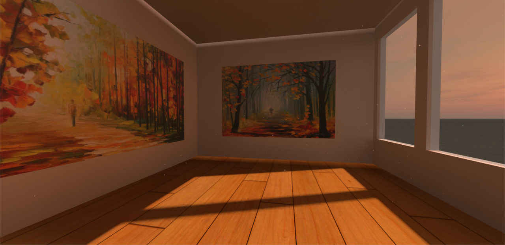
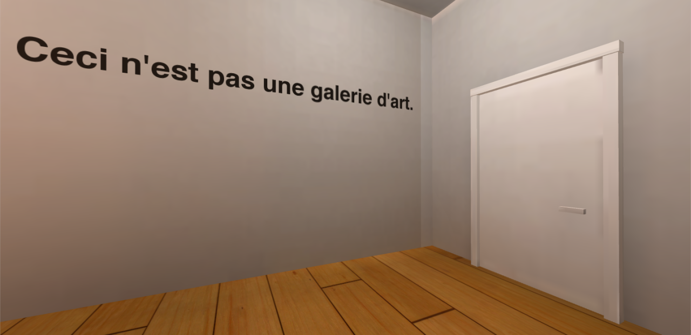
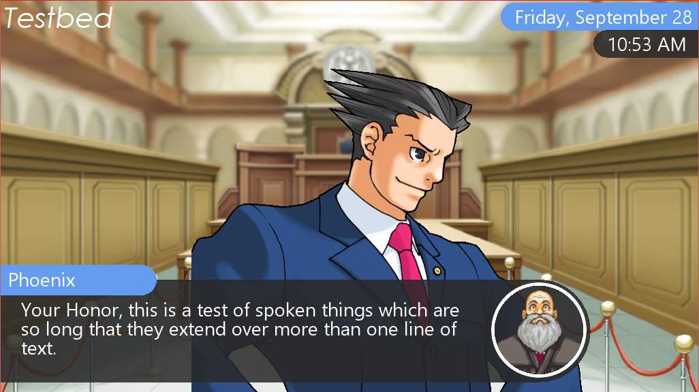

Sir, I am Looking for this Book (Desktop, 2016)
Developed with a small portion of the RISD/Brown Game Dev team during an 8-hour game jam, then cleaned up in 4-hour segments over the next two weeks. Sir, I am Looking for this Book is a puzzle-platformer about a towering, magical library. The player's goal is to reach the top of the tower and find a powerful spellbook.
The game was made in GameMaker. I was the lead programmer, with one other programmer who had never used GameMaker working alongside me. I programmed most of the game while also teaching the other programmer how to work with Gamemaker. It was rewarding to work with such a skilled art team, and to help my fellow programmer go from totally inexperienced to implementing entire objects without help.
Lumen (Desktop, 2016)
Developed with the RISD/Brown Game Dev team during a 10-hour game jam. Lumen is a point-and-click puzzle game where the player controls the movement of the character by turning on and off lamps placed around the level. Each lamp makes a path of light appear or disappear, or toggles the state of another lamp. The game aims to elicit a sense of discovery and the satisfaction of executing a complex plan to solve a puzzle.
Lumen was made in GameMaker. I worked largely on menus for the game, along with contributing to the game design document before the game jam actually began. It was very exciting to work together with a large team all in the same room, and I learned a lot about resolving Git merge conflicts that day.
Check it out: GitHub


Eat@Brown (iOS, 2016)
Originally developed over the course of a day at Hack@Brown 2016, Eat@Brown is a simple iOS app which displays the menus at the main dining halls of Brown University. I wrote the backend code, which connects to the Brown Dining Services API and downloads the menu details as-needed and stores them locally. The other students who worked on Eat@Brown were Alex Sekula and Joe Romano. This was the first time I had used Swift, and the first time they had worked on a full iOS app.
In the future, we hope to implement a system which allows users to get notifications when their favorite foods are available, a rating system, and a way to view photos and neutritional information about the foods. Additionally, I am currently working on an Android version of the app. We hope that it can become the go-to menu information source for Brown students, so we would like to add the menus for the other eateries too.
Check it out: iOS App Store GitHub (iOS) GitHub (Android)
Central Park App Redesign (2015)
Designed with Damin Kim, Syed Naqvi, and Hyemi Song for the final project of CSCI1300: Designing, Developing, and Evaluating User Interfaces. We decided to remake the official Central Park app because the current app is antiquated and does not help users get the most out of the park. Our goal was to update the design to a more modern standard, as well as to improve usability, functionality, and clarity. We retained all of the features of the old app, and also added a system which allows users to leave comments on the map for other users to read. The information screen automatically displays the information for the user's current location, so there is no need to search or select.
For this project I did the original concept sketch, worked with the rest of the team to redesign each screen, and created the video. We used Sketch, Facebook's iOS 9 UI resource kit, Google Maps, and After Effects. The process of redesigning the app was surprisingly difficult; I learned that just because a flaw is obvious, that doesn't mean it's easy to address. Wrapping a new design around old functionality limits your freedom and forces you to think of creative solutions.

Various Oculus Rift Projects (Unity, 2014 - 2015)
I worked on three Oculus projects for a high school class in 3D design. I used Unity (with C# and javascript scripts) to put together the games and SketchUp to make my models. Developing for the Oculus was a really unique and interesting experience, although I was hampered by my lack of previous experience in 3D game development. I would love to learn more about it in the future.




GetTogether (iOS, 2014 - 2015)
Inspired by a frustrating experience meeting up with a friend during the summer, GetTogether was a location-sharing app which allowed users to generate constantly-updating GPS paths to one another so that no frustrating back-and-forth texts had to be made. Users could only see each other's positions if both had agreed to meet up, making the app more secure than other similar products. The project used the Google Maps API, along with a PHP/MySQL database which I wrote. This was my first major iOS development project and my first time ever using PHP or a MySQL database.
I also worked on porting the database structure to the Google App Engine cloud backend. This was a challenge, and I was unable to finish before the school year ended and I lost my access to a mac (and XCode). The Objective-C code in the project is now somewhat antiquated, and I would be interested in rewriting it in Swift.
Check it out: GitHub
Unnamed Java Game Engine (Desktop, 2014 - Ongoing)
My longest-running project, this game engine originally started as a simple test to teach myself how to structure a large programming project with multiple files and grew into a complicated and substantial game engine. My goal is to create an intuitive and highly efficient platform for writers and artists to create visual novels (games which are largely based around the display of text and character sprites). Over time, it has amassed an impressive feature list: it reads and interprets custom XML scripts written by the user, it uses a purpose-built graphics system based on Swing, and it keeps track of saved data dynamically so that writers can keep track of their own custom variables and use the player's decisions to shape the story.
In the future, I hope to expand the functionality of the program further, iron out as many bugs as I can, and release it for public use. I also intend to write a scriptwriter companion program, to make assembling the XML script simple and GUI-based.
Check it out: GitHub
